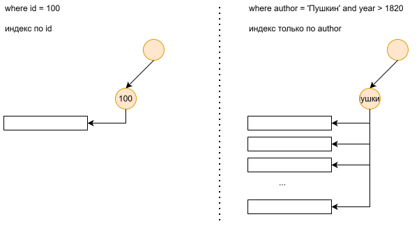

Что такое индекс
Индекс- это специальная структура данных для ускорения поиска в таблице- Как именно индекс хранится, как он реализован - это технические детали конкретных СУБД
Для построения индексов существует несколько разных алгоритмов
- Они отличаются в разных СУБД, но есть и общие
- Например,
B-treeиндекс (сбалансированное дерево) есть во всех СУБД
- Например,
- Разные виды индексов достигают ускорения поиска за счет разных
принципов
- Но ключевое то, что цель индекса - ускорение поиска, а как - это детали реализации
- Они отличаются в разных СУБД, но есть и общие
Недостатки индексов
- Индексы замедляют модификацию данных (вставку, обновление, удаление)
- Потому что приходится пересчитать индексы с учетом измененных данных
- Индексы тоже занимают определенный объем хранилища
Тем не менее, польза от правильно составленных индексов перевешивает эти накладные расходы.
Эффективность индекса
- Индекс наиболее эффективен, когда позволяет отбросить много данных и
неэффективен, если отбрасывает мало
- В последнем случае планировщик может посчитать последовательный перебор более эффективным, и не будет использовать индекс
- Поэтому индексы надо строить по полю полям в высокой
селективностью
Селективность
Селективность- это показатель уникальности значений в столбце комбинации столбцов- Много уникальных значений - высокая селективность - хорошо
- Мало уникальных значений - низкая селективность - плохо
- Селективность можно выразить числом, по формуле
количество уникальных значений \ общее количество записей- Диапазон получается от 0 до 1
- Чем ближе к 1, тем соответственно лучше (высокая селективность)
- Например, поле “пол” имеет два уникальных значения (М и Ж)
- На 100_000 записей селективность составит
2 \ 100_000 = 0.00002
- На 100_000 записей селективность составит
- Поле “автор” допустим имеет 1000 уникальных значений
- Его селективность
1_000 \ 100_000 = 0.01
- Его селективность
- У кого значение выше, у того значит выше селективность, значит это
поле лучше подходит для индекса
"автор" (0.01) > "пол" (0.00002), поэтому “автор” лучше подходит для индекса
- Иногда результат умножают на 100%, чтобы получить результат в процентах
- id - идеальная селективность (1), абсолютно уникальные значения
- поэтому по id все СУБД обычно сами автоматически делают индекс
Почему низкая селективность - плохо для индекса
- Поиск данных связан с чтением с диска
- Технически чтение бывает последовательным и произвольным
- Последовательное чтение - это когда блоки диска читаются друг за другом
- Произвольное чтение - это когда блоки читаются то из одного места диска, то из другого (“прыжки”)
- Технически последовательное чтение быстрее
- Поиск в индексе - это произвольное чтение
- Причем произвольное чтение два раза - первый раз при поиске в самом индексе, второй раз - для выбора данных из таблицы
- Поиск в таблице - это последовательное чтение
- Как эти факторы связаны с селективностью?
Пример “Ищем мужчин”
- Допустим, в таблице сотрудников 100 000 записей. Мы сделали индекс по полю “пол” (низкая селективность). Выбираем всех мужчин, находим 30 000 записей в индексе. Теперь надо сделать 30 000 прыжков, чтобы прочитать данные из таблицы об этих найденных мужчинах.
- Поскольку технически прыжки гораздо дороже последовательного чтения, то выйдет, что прочитать 100 000 записей последовательно для поиска мужчин будет технически выгоднее, чем использовать индекс и прыгать 30 000 раз.
- Поэтому планировщик не будет использовать такие невыгодные индексы. Поэтому и создавать их бесполезно.
Пример “Популярный автор”
- Допустим, в таблице постов 10 000 и 9000 из них написал один автор - Вася, а остальная 1000 размазана еще по десятку других авторов
- Мы сделали индекс по автору
- Потенциально селективность хорошая
- Но на практике, если мы захотим найти посты Васи по индексу, то обнаружим 9000 записей, значит надо сделать 9000 прыжков к таблице
- Поэтому технически выгоднее последовательно просмотреть 10000 записей, чем использовать индекс
- Но если мы захотим найти посты Пети, который написал их всего 2 штуки, то очевидно выгоднее сделать 2 прыжка, чем последовательно читать все 10000
- Из этого примера надо уяснить, что индекс по полю, которое
потенциально дает хорошую селективность, может в конкретном случае быть
невыгодным из-за состояния данных в текущий момент
- Хорошая новость в том, что планировщики сами понимают в таком
случае, что выгоднее - искать по индексу или последовательно
- Они хранят свою внутреннюю статистику по значениям, но это технические детали
- Поэтому мы просто создаем индекс, который имеет хороший потенциал, а планировщик сам решает, использовать его в моменте или нет
- Хорошая новость в том, что планировщики сами понимают в таком
случае, что выгоднее - искать по индексу или последовательно
Технические разновидности индексов
- Индексы реализуются на разных принципах и алгоритмах
- Это делает какие-то индексы более эффективными для каких-то конкретных задач и менее эффективными для других
B-tree
B-treeиндекс (сбалансированное дерево) есть во всех СУБД- Он используется по умолчанию и годится для большинства повседневных задач
- Хорошо работает на данных, для которых работает оператор сравнения
- В узлах дерева хранятся ключи - значение поля полей, по которым построен индекс
- В листьях дерева - хранится либо ссылка на данные, либо сами данные
- В зависимости от того, какой индекс - кластеризованный или нет
- P.S. Данные всегда хранятся только в листьях, а в узлах - не
хранятся
- P.P.S. Листья - это “конечные” узлы если что (у которых нет потомков)
- Поскольку дерево - упорядоченная структура, то можно быстро
отбросить часть данных и получить т.о. ускорение поиска
- Можно либо сразу найти конкретное значение
- Например
id = 100
- Например
- Либо проводить последовательный поиск на небольшой части данных
- Например
author = 'Пушкин' and year > 1820- Для случая, когда индекс только по полю author - СУБД быстро находит все книги Пушкина и начинает среди них уже последовательно перебирать в поисках тех что написаны после 1820 года
- Например
- P.S. Как поиск в b-деревьях работает - это отдельная тема, т.к. это не просто двоичное дерево, тут поиск комбинированный
- Можно либо сразу найти конкретное значение

Кластеризованный и некластеризованный индекс
- Такое деление характерно для b-tree индексов
- Главное отличие - в том что хранится в листьях
- Кластеризованный индекс - в листьях хранятся сами данные
- Некластеризованный - в листьях хранятся ссылки на данные
- Допустим, у таблицы индексов нет, а есть просто страницы с данными
- Мы создаем кластеризованный индекс
- При этом СУБД создает новые страницы под индекс и копирует в них данные в упорядоченном виде (в листовые страницы)
- Исходные страницы удаляются
- Фактически получается, что кластеризованный индекс - это и есть теперь “таблица”, поскольку он хранит данные
- Из этого следует, что кластеризованный индекс может быть только один
- Когда мы создаем некластеризованный индекс
- То СУБД создает страницы под индекс и в листовые страницы кладет ссылки на данные, а не сами данные
- Отсюда следует, что некластеризованных индексов можно создавать сколько угодно, потому что на расположение исходных данных они не влияют
- Мы создаем кластеризованный индекс
- Несколько мыслей
- Кластеризованные индексы имеет смысл создавать на поля, значения в
которых идут нарастающим манером
- Например “дата добавления поста”
- Потому что это не приводит к сильной перестройке индекса, т.к.
строка добавляется в конец
- Если же сделать, например, на поле “фамилия”, то новую строку с фамилией “Петров” придется вставлять куда-то в середину данных, и все окружающие данные придется перекладывать, что очевидно дороже чем добавлять в конец
- Потому что это не приводит к сильной перестройке индекса, т.к.
строка добавляется в конец
- Например “дата добавления поста”
- Кластеризованные индексы имеет смысл создавать на поля, значения в
которых идут нарастающим манером
Составной индекс
Составной индекс- это индекс, который строится по нескольким полям- Разумное количество полей 2-3
- Технически можно гораздо больше, но фактически это приводит к деградации скорости
- Порядок полей важен
- Сортировка идет именно в том порядке, какой указан в индексе
- Обычно составной индекс используется для b-tree индексов
- Разумное количество полей 2-3
- Например, делаем индекс по полю country + city и получаем ускорение запросов вида
SELECT population, postal_code
FROM cities
WHERE country = 'Russia' AND city = 'Moscow';SELECT city
FROM cities
WHERE country = 'Russia'- А вот такой запрос не ускорится
SELECT population, postal_code
FROM cities
WHERE city = 'Moscow';- Потому что сортировки непосредственно по city нет
- Сортировка по city только в пределах country, потому что индекс на country + city
- Так что для ускорения такого запроса надо делать отдельный индекс только по city
Тактики использования индексов
Несколько индексов для таблицы
- Для одной таблицы можно строить несколько индексов для ускорения разных запросов
- Какое поле набор полей выбрать для индекса - зависит от того, какие поля фигурируют чаще всего в запросах в предложениях where и order by.
Покрывающий индекс
Покрывающий индекс- это скорее паттерн использования индексов, а не техническая разновидность- Основывается он на составном индексе
- Суть в том, что в индекс добавляются все поля, которые требуются для
запроса
- Тогда движку не приходится обращаться к таблице, потому что все нужные данные уже содержатся в индексе
- Например, “получить все заказы клиента, начиная с недавних”, вполне
обычная задача для личного кабинета интернет-магазина
- Делаем составной индекс по user_id + created_at + order_id
SELECT order_id
FROM orders
WHERE user_id = 123
ORDER BY created_at DESC
LIMIT 20- Движку не надо обращаться к таблице, чтобы получить order_id, потому он есть в индексе
- P.S. Был вопрос - а не лучше ли сделать индекс по created_at DESC,
раз нам всегда нужны данные в обратном порядке?
- Ответ - нет, не лучше. Движок нормально читает индекс задом наперед, поэтому даже ASC индекс хорошо работает при DESC-выборке. А вот на вставку DESC-индекс влияет плохо, потому что приходится данные с предыдущими датами перемещать “вниз”.
TODO
В индекс включаются поля, которые наиболее часто фигурируют в запросах в предложениях where и order by, а при выборе последовательности полей в индексе можно ориентироваться на селективность (это я правда уже сам такой вывод сделал, а не прочитал где-то, так что инфа не 100%).